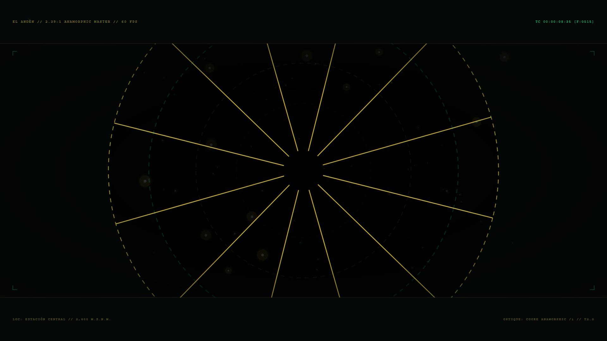

00 // EL FILM
15 segundos. Cero sonido.

ACTO III // FRAMES 480–720
El colapso y la síntesis

- Implosión con aceleración bezier(0.7, 0, 0.84, 0)
- Onda de choque oro + esmeralda en el impacto (f535)
- El aro dorado gira −90° → 0° y sella la lente
- Destello anamórfico cruza el emblema (f620–700)
07 // ENTREGABLES
Qué se entrega
01
Master 1080p
el-anden-cafe.mp4 · H.264 · 60 fps
02
Master 4K
Composición MainComposition-4K lista para render
03
Código fuente
Proyecto Remotion modular: actos, ópticas, partículas y SVG
04
Presentación
Este deck en HTML + PPTX + página interactiva